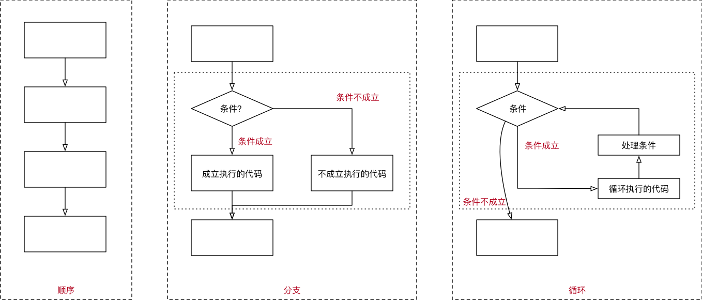
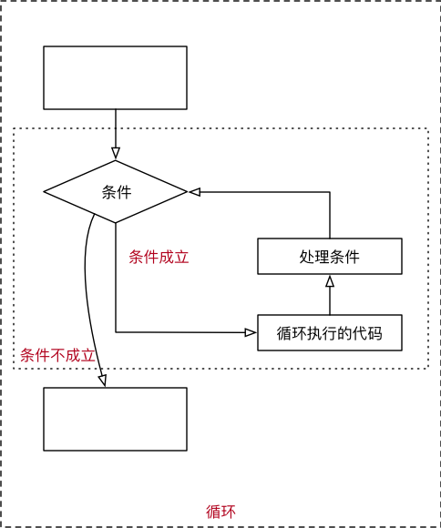

循环
目标
- 程序的三大流程
- while 循环基本使用
- break 和 continue
- while 循环嵌套
01. 程序的三大流程
在程序开发中，一共有三种流程方式：
- 顺序 —— 从上向下，顺序执行代码
- 分支 —— 根据条件判断，决定执行代码的 分支
- 循环 —— 让 特定代码 重复 执行

02. while 循环基本使用
- 循环的作用就是让 指定的代码 重复的执行
while循环最常用的应用场景就是 让执行的代码 按照 指定的次数 重复 执行- 需求 —— 打印 5 遍
Hello Python - 思考 —— 如果要求打印 100 遍怎么办？
2.1 while 语句基本语法
1 | 初始条件设置 —— 通常是重复执行的 计数器 |
注意：
while语句以及缩进部分是一个 完整的代码块
第一个 while 循环
需求
- 打印 5 遍 Hello Python
1 | # 1. 定义重复次数计数器 |
注意：循环结束后，之前定义的计数器条件的数值是依旧存在的
死循环
由于程序员的原因，忘记 在循环内部 修改循环的判断条件，导致循环持续执行，程序无法终止！
2.2 赋值运算符
- 在 Python 中，使用
=可以给变量赋值 - 在算术运算时，为了简化代码的编写，
Python还提供了一系列的 与 算术运算符 对应的 赋值运算符 - 注意：赋值运算符中间不能使用空格
| 运算符 | 描述 | 实例 |
|---|---|---|
| = | 简单的赋值运算符 | c = a + b 将 a + b 的运算结果赋值为 c |
| += | 加法赋值运算符 | c += a 等效于 c = c + a |
| -= | 减法赋值运算符 | c -= a 等效于 c = c - a |
| *= | 乘法赋值运算符 | c = a 等效于 c = c a |
| /= | 除法赋值运算符 | c /= a 等效于 c = c / a |
| //= | 取整除赋值运算符 | c //= a 等效于 c = c // a |
| %= | 取 模 (余数)赋值运算符 | c %= a 等效于 c = c % a |
| **= | 幂赋值运算符 | c = a 等效于 c = c a |
2.3 Python 中的计数方法
常见的计数方法有两种，可以分别称为：
- 自然计数法（从
1开始）—— 更符合人类的习惯 - 程序计数法（从
0开始）—— 几乎所有的程序语言都选择从 0 开始计数
因此，大家在编写程序时，应该尽量养成习惯：除非需求的特殊要求，否则 循环 的计数都从 0 开始
2.4 循环计算
在程序开发中，通常会遇到 利用循环 重复计算 的需求
遇到这种需求，可以：
- 在
while上方定义一个变量，用于 存放最终计算结果 - 在循环体内部，每次循环都用 最新的计算结果，更新 之前定义的变量
需求
- 计算 0 ~ 100 之间所有数字的累计求和结果
1 | # 计算 0 ~ 100 之间所有数字的累计求和结果 |
需求进阶
- 计算 0 ~ 100 之间 所有 偶数 的累计求和结果
开发步骤
- 编写循环 确认 要计算的数字
- 添加 结果 变量，在循环内部 处理计算结果
1 | # 0. 最终结果 |
03. break 和 continue
break和continue是专门在循环中使用的关键字
break某一条件满足时，退出循环，不再执行后续重复的代码continue某一条件满足时，不执行后续重复的代码
break和continue只针对 当前所在循环 有效

3.1 break
- 在循环过程中，如果 某一个条件满足后，不 再希望 循环继续执行，可以使用
break退出循环
1 | i = 0 |
break只针对当前所在循环有效
3.2 continue
- 在循环过程中，如果 某一个条件满足后，不 希望 执行循环代码，但是又不希望退出循环，可以使用
continue - 也就是：在整个循环中，只有某些条件，不需要执行循环代码，而其他条件都需要执行
1 | i = 0 |
- 需要注意：使用
continue时，条件处理部分的代码，需要特别注意，不小心会出现 死循环
continue只针对当前所在循环有效
04. while 循环嵌套
4.1 循环嵌套
while嵌套就是：while里面还有while
1 | while 条件 1: |
4.2 循环嵌套演练 —— 九九乘法表
第 1 步：用嵌套打印小星星
需求
- 在控制台连续输出五行
*，每一行星号的数量依次递增
1 | * |
- 使用字符串 * 打印
1 | # 1. 定义一个计数器变量，从数字1开始，循环会比较方便 |
第 2 步：使用循环嵌套打印小星星
知识点 对 print 函数的使用做一个增强
- 在默认情况下，
print函数输出内容之后，会自动在内容末尾增加换行 - 如果不希望末尾增加换行，可以在
print函数输出内容的后面增加, end="" - 其中
""中间可以指定print函数输出内容之后，继续希望显示的内容 - 语法格式如下：
1 | # 向控制台输出内容结束之后，不会换行 |
end=""表示向控制台输出内容结束之后，不会换行
假设 Python 没有提供 字符串的 * 操作 拼接字符串
需求
- 在控制台连续输出五行
*，每一行星号的数量依次递增
1 | * |
开发步骤
- 1> 完成 5 行内容的简单输出
- 2> 分析每行内部的
*应该如何处理？- 每行显示的星星和当前所在的行数是一致的
- 嵌套一个小的循环，专门处理每一行中
列的星星显示
1 | row = 1 |
第 3 步： 九九乘法表
需求 输出 九九乘法表，格式如下：
1 | 1 * 1 = 1 |
开发步骤
- 打印 9 行小星星
1 | * |
- 将每一个
*替换成对应的行与列相乘
- 将每一个
1 | # 定义起始行 |
字符串中的转义字符
\t在控制台输出一个 制表符，协助在输出文本时 垂直方向 保持对齐\n在控制台输出一个 换行符
制表符 的功能是在不使用表格的情况下在 垂直方向 按列对齐文本
| 转义字符 | 描述 |
|---|---|
| \\ | 反斜杠符号 |
| \‘ | 单引号 |
| \“ | 双引号 |
| \n | 换行 |
| \t | 横向制表符 |
| \r | 回车 |